Caudal y Flujo
Rapidez del flujo de fluido
La cantidad de fluido que fluye en un sistema por unidad de tiempo puede expresarse mediante los siguientes tres términos diferentes:
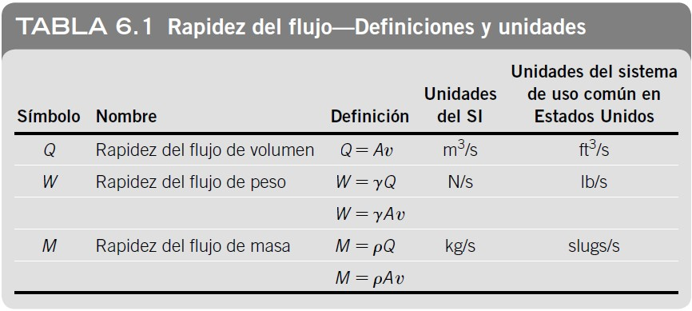Nota: Mecánica de Fluidos. 7 ed. (2015. pág. 119). por Mott, R.L. & Untener J.A.
Rapidez del Flujo de Volumen (CAUDAL)
La rapidez del flujo de volumen es el volumen de fluido que fluye a lo largo de una sección por unidad de tiempo. Se representa con la letra Q y se define como:
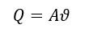
donde A representa el área de la sección y 𜈠indica la velocidad promedio del flujo. Las unidades de Q se pueden deducir como sigue, utilizando unidades del SI como ilustración:
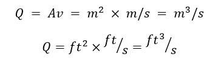
Ãğ‘Ÿğ‘’ğ‘ğ‘ ğ‘‘ğ‘’ ğ‘¡ğ‘¢ğ‘ğ‘’ğ‘ŸÃğ‘ 𑜠ğ‘ ğ‘’ğ‘ğ‘ğ‘–ğ‘œğ‘›ğ‘’ğ‘ ğ‘ğ‘–ğ‘™Ãğ‘›ğ‘‘ğ‘Ÿğ‘–ğ‘ğ‘ğ‘
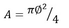Nota: adaptado de mecánica de fluidos, facultad de ciencias naturales e ingenierÃa, unidades tecnológicas de Santander Barrancabermeja (2021, pág. 23) por MSc. Leidys Marleyn RodrÃguez Castro
Factores de conversión para la rapidez del flujo de volumen
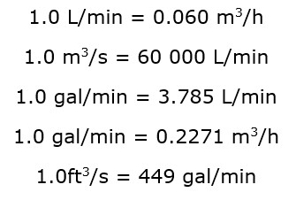
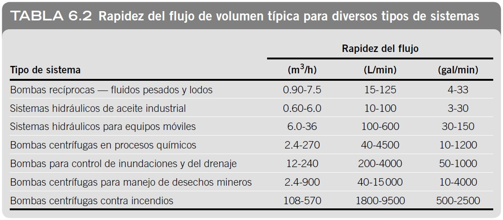
Nota: Mecánica de Fluidos. 7 ed. (2015. pág. 119). por Mott, R.L. & Untener J.A.
Rapidez del Flujo de Peso
La rapidez del flujo de peso es el peso de fluido que fluye a lo largo de una sección por unidad de tiempo. Se representa con la letra W y se define como:
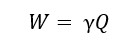
donde 𛾠representa el peso especÃfico del fluido. Entonces, las unidades del SI para W son:
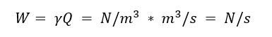
Rapidez del Flujo de Masa
La rapidez del flujo de masa es la masa de fluido que fluye a lo largo de una sección por unidad de tiempo. Se representa con la letra M y se define como:
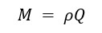
donde ⍴ indica la densidad del fluido. Entonces, las unidades del SI para M son:
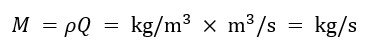
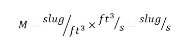
Mott, R.L. & Untener J.A. (2015). Mecánica de Fluidos. 7 ed., pág. 118-119. México: Pearson Educación de México, S.A. de C.V.